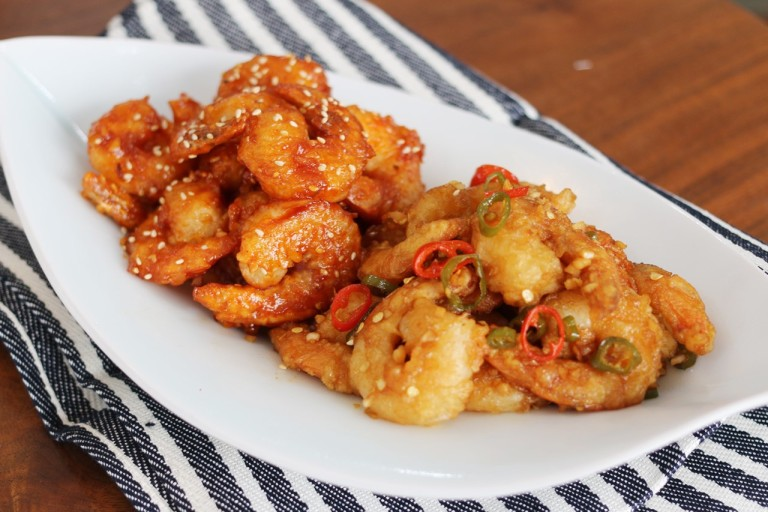

[ Fried Shrimp with Hot Pepper Sauce ]
튀긴 새우를 매콤한 중화풍 소스에 재빨리 볶아 만드는 중국요리.

단짠새콤 깐풍새우 조리법
- 새우를 깨끗이 씻어 손질 후 녹말가루와 달걀흰자를 섞어 반죽을 만든다.
- 약 170℃로 달군 기름에 튀김 반죽을 입힌 새우를 튀긴다.
- 또 다른 팬에 기름을 두르고 대파와 생강 다진 것을 넣어 향을 낸 후,
양파, 청피망, 홍고추 다진 것을 함께 볶는다.
- 재료가 고루 익을 때쯤 간장, 설탕, 식초를 한 큰술 반씩 같은 비율로 넣고,
물은 세 큰술 넣고 볶아준다.
- 소스가 자작하게 조려졌을 때 튀긴 새우를 넣고 소스가 새우에 스며들도록
재빨리 볶고 접시에 담아낸다.